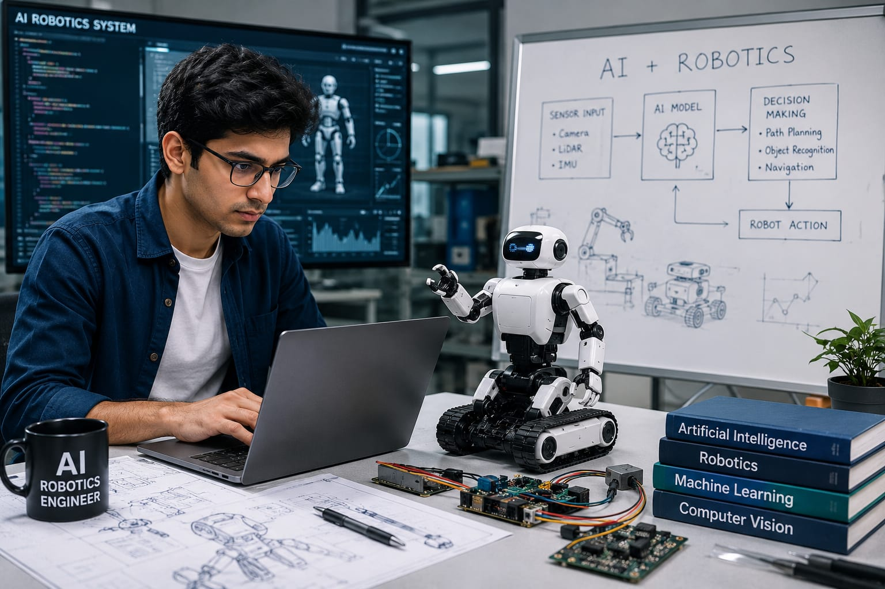

- Imagine a robot is cleaning the floor in a school.
- The robot should avoid people and other objects while cleaning.
- Someone created a system that gives proper directions to robot.
- The person who builds these intelligent systems is called an AI Robotics Engineer.
- 👉 In simple words: AI Robotics Engineers develop intelligent robots that can learn, make decisions, and perform tasks automatically.
AI Robotics Engineer
🧑🎨 What Do They Do?

🎓 How to Become an AI Robotics Engineer
These beginner-level courses help students learn robotics, automation, programming, electronics, and artificial intelligence fundamentals.
Diploma in Automation and Robotics
Duration: 3 Years
Eligibility: Class 10 Pass with Science and Mathematics
Entrance Exam: State Polytechnic Entrance Exams / Merit-Based Admission
Diploma in Computer Science Engineering (CSE)
Duration: 3 Years
Eligibility: Class 10 Pass
Entrance Exam: State Polytechnic Entrance Exams / Merit-Based Admission
Diploma in Artificial Intelligence and Machine Learning
Duration: 3 Years
Eligibility: Class 10 Pass
Entrance Exam: State Polytechnic Entrance Exams / Merit-Based Admission
📝 Exam Details
(Click on the exam name to see full details)
Polytechnic Entrance Exam Merit-Based AdmissionNote: After Diploma, most students continue through B.Tech Lateral Entry to gain advanced AI, robotics, and automation knowledge required for AI Robotics Engineer roles.
These degree programs provide advanced knowledge in robotics, artificial intelligence, machine learning, automation, sensors, and intelligent systems.
B.Tech in Artificial Intelligence and Robotics ⭐
Duration: 4 Years
Eligibility: 10+2 with Physics, Chemistry, and Mathematics
Entrance Exam: JEE Main / JEE Advanced / State Engineering Entrance Exams
B.Tech in Robotics and Automation
Duration: 4 Years
Eligibility: 10+2 with PCM
Entrance Exam: JEE Main / State Engineering Entrance Exams
B.Tech in Artificial Intelligence and Machine Learning
Duration: 4 Years
Eligibility: 10+2 with PCM
Entrance Exam: JEE Main / State Engineering Entrance Exams
📝 Exam Details
(Click on the exam name to see full details)
JEE Main JEE Advanced State Engineering Entrance ExamsThese lateral-entry programs help diploma holders specialize in robotics, artificial intelligence, machine learning, and intelligent automation systems.
B.Tech Lateral Entry in Artificial Intelligence and Robotics
Duration: 3 Years
Eligibility: Diploma in Automation, Robotics, CSE, IT, or Electronics
Entrance Exam: State Lateral Entry Entrance Tests
B.Tech Lateral Entry in Robotics and Automation
Duration: 3 Years
Eligibility: Relevant Engineering Diploma
Entrance Exam: State Lateral Entry Entrance Tests
B.Tech Lateral Entry in Artificial Intelligence and Machine Learning
Duration: 3 Years
Eligibility: Diploma in CSE, IT, or allied branches
Entrance Exam: State Lateral Entry Entrance Tests
These postgraduate programs help engineers specialize in artificial intelligence, robotics, autonomous systems, and intelligent automation technologies.
M.Tech in Artificial Intelligence and Robotics
Duration: 2 Years
Eligibility: B.Tech / B.E. in CSE, ECE, EE, Robotics, or related branches
Entrance Exam: GATE / University PG Entrance Exams
M.Tech in Robotics and Automation
Duration: 2 Years
Eligibility: B.Tech / B.E. in relevant engineering disciplines
Entrance Exam: GATE / State PGCET
M.Tech in Artificial Intelligence
Duration: 2 Years
Eligibility: B.Tech / B.E. in CSE, IT, or related branches
Entrance Exam: GATE / State PGCET
Note:
(Age limits, marks, and admission process may vary depending on the college or state. These courses are available in many colleges and universities across India. You can choose colleges based on your location, budget, and entrance exams.)
🏛️ Top Colleges for AI Robotics Engineer
(Tap on a college to visit the official website)
After 10th Pass (Diplomas)
Government Polytechnic, Pune Government Polytechnic, Mumbai Lovely Professional University (LPU), Phagwara Sardar Vallabhbhai Patel Polytechnic, Mumbai Chhotu Ram Polytechnic, RohtakAfter 12th Pass (Bachelor's Degrees)
Indian Institute of Technology (IIT) Hyderabad, Hyderabad Vellore Institute of Technology (VIT), Vellore SRM Institute of Science and Technology, Chennai Amrita Vishwa Vidyapeetham, Coimbatore Chandigarh University, MohaliAfter Diploma (Lateral Entry)
Delhi Technological University (DTU), New Delhi Anna University, Chennai Jadavpur University, Kolkata PSG College of Technology, Coimbatore Thapar Institute of Engineering and Technology, PatialaAfter Graduation (Master's Degrees)
Indian Institute of Science (IISc), Bangalore Indian Institute of Technology (IIT) Kharagpur, Kharagpur Indian Institute of Technology (IIT) Hyderabad, Hyderabad Indian Institute of Technology (IIT) Roorkee, Roorkee Defence Institute of Advanced Technology (DIAT), PuneSTEP 1
Imagine you are working as an AI Robotics Engineer at a technology company.
STEP 2
Your company wants to build a robot that can help farmers on large farms.
STEP 3
You write code that helps the robot move through fields and avoid obstacles.
STEP 4
You use AI to help the robot identify healthy and unhealthy plants.
STEP 5
You test the robot and check if it is working correctly.
STEP 6
After making improvements, the robot helps farmers save time and effort.
STEP 7
If you enjoy AI, coding, and creating smart machines, this career may be a great choice for you.
Where do AI Robotics Engineers work? (Job Roles + Growth)
These are some roles you can explore in AI Robotics Engineering.
You usually start with beginner roles and grow with experience.
🟢 Beginner Roles
🤖
Junior Automation & Robotics Associate
(After Short-Term Certification / Diploma)
Tests sensors and maintains factory automation systems.
📋
Graduate Engineer Trainee (Robotics & AI)
(After Diploma / B.Tech)
Assists engineers in building and testing robotic systems.
🔵 Mid-Level Roles
🧠
AI Robotics Software Engineer
(After B.Tech + Industrial Certification)
Develops AI software that helps robots make decisions.
⚙️
Robotics Simulation & Control Engineer
(After B.Tech + Experience)
Tests robot movements and improves system performance.
🟣 Advanced Roles
🚀
Principal Autonomous Systems Architect
(After M.Tech + Advanced Specialization)
Designs intelligent robots and autonomous machines.
🌍
Director of AI Robotics & Intelligence R&D
(After Advanced Executive Program + Experience)
Leads teams developing next-generation AI robotics technologies.
🏭
Manufacturing Companies
Build and maintain automated factory machines.
🤖
Robotics Companies
Develop robots and intelligent automation systems.
🚗
Automotive Companies
Create smart vehicle systems and production equipment.
⚡
Industrial Automation Companies
Design control systems for modern industries.
🏥
Medical Device Companies
Develop healthcare machines and diagnostic equipment.
🌍
Research Organizations
Create new technologies and automation solutions.
(Click Yes or No for each question)
1. Have you ever wondered how robots and machines work automatically in factories?
2. Do you like to create machines?
3. Do you want to learn how robots are designed and built?
4. Are you interested in learning how machines, electronics, and software work together?
5. Imagine you work on creating robots used in hotels, hospitals, factories, and airports. You help design and test the mechanical parts, electronic sensors, and software that make these robots work. You make sure all these parts work together properly so the robot can perform its job automatically. Does this excite you?